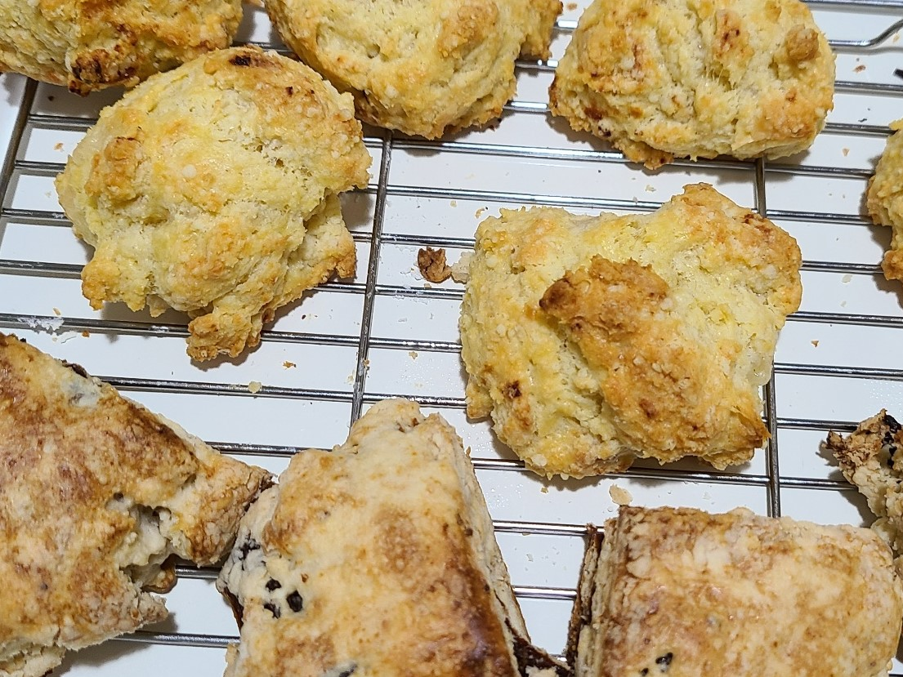

스콘 
_재료
베이킹소다 1티(베이킹파우다 1티)
소다는 위로 팽창.
파우더는 옆으로 팽창.
박력분 200g (밀가루도 차가울수록 좋아, 버터 빨리 안 녹음)
안 녹게 차가운 버터 100g or 50g, 60g
소금 설탕 조금씩
우유(일본은 대신 스나우스콘;생크림)
_과정
기본은 체치기
- 버터 열안받게
- 자르는 칼에 밀가루 묻혀가면서
(여름엔 자른 후 냉장고에 20~30분 두기도.. 녹으니까)
- 밀가루에 버터 먹이는 것과 비슷
- 우유 조금씩 넣어가며 뭉쳐.. 반죽 안되게
반죽이 되면 우유를 약간씩..
어떻게 하든지 글루텐이 형성되지 않게..
치대지 않고 접어가기..
뭉쳐지면 됨. 허나 반죽은 안되게
- 위에 우유 바르기
- 스콘 위를 반들반들하게 하려면 달걀물 바르기 (달걀에 물 2스푼)
- 밀가루 다음 단계에 치즈 갈아서 넣고,
달걀 하나 넣기..
(총 반죽의 절반 정도, 우유 안들어가도 됨)